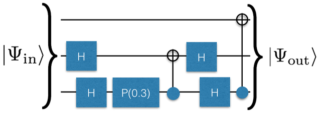

QC Simulator II
Contents
QC Simulator II#
References#
“Quantum Computation and Quantum Information” by Nielsen and Chuang. The first two chapters provide a detailed and self-contained introduction and explanation of qubits and quantum gates.
Lecture notes for the course “Qubits, quantum mechanics, and computers” from Umesh Vazirani at Berkeley.
Lecture notes from John Preskill at Caltech.
Lecture notes from Ryan O’Donnell and John Wright at CMU. First and second lectures cover basic quantum mechanics and quantum gates.
Wikipedia article on qubits.
Wikipedia article on quantum gates.
A very rough draft of notes on quantum computing we put together when we were thinking what this course would look like
Minimal Background#
In the previous section, we learned about how to represent a quantum state on a set of wires. In this section, we are going to learn about quantum gates.
A quantum gate changes the state of the quantum system.
Let’s start with thinking about a gate (say a Hadamard) on one wire.
----H----
One way to understand this gate is to understand what it does to \(|0\rangle\) and \(|1\rangle\).
In particular a Hadamard takes
It turns out because quantum mechanics is linear, this is all that we need to know because then
There is another way to get this result by thinking about matrices. The Hadamard is represented by the matrix \(H=\frac{1}{\sqrt{2}}\left[ \begin{bmatrix} 1 & 1 \\ 1 & -1 \end{bmatrix} \right]\)
If I want the state of a wire after the Hadamard is applied to the state \(\alpha|0\rangle + \beta|1\rangle\) which is represented by the vector \(v=[\alpha, \beta]\). I can simply compute \(Hv\).
So far we’ve figured out how to deal with a gate on one wire. Suppose a gate is on the middle of three wires.
-------
---H---
-------
Sneakily what’s happening is that the gate acts on all three wires; it just does nothing on the wires that we don’t write it on (the gate is applying the identity operator).
We should describe what happens on all the binary numbers \(|000\rangle, |001\rangle, ... |010\rangle ... |111\rangle\). We can think about the Hadamard applied to \(|010\rangle\) as \(|0\rangle H|1\rangle |0\rangle\) which we know is
There is also a matrix equivalent of this. Notice that because there are three wires, the vector representing the state is going to be length \(2^3=8\). The relevant matrix is then \(I \otimes H \otimes I\) where \(I\) is the \(2\times 2\) identity matrix (if the Hadamard wasn’t applied to the middle wire it would be in a difference place).
The Phase(\(\theta\)) gate works exactly like the Hadamard does. It’s a single gate which applies to one wire
----$P(\theta)$----
The CNOT gate is slightly subtle. It spans two wires
--.---
|
--o---
Therefore to describe it we have to describe how it acts on four basis elements and give it a \(4 \times 4\) matrix. Obviously when you pad with identities you should only include identities for the wires which it is not on.
Conceptually the controlled-not is a gate which not’s the second wire when the control wire is one. Here we’ve described the equations/matrices when the control wire is atop the not-wire. It is left as an exercise for the reader to describe how this changes when the control wire is lower then the not-wire.
Quantum Simulator II#
As part of this assignment, you are going to build a number of quantum computing simulators.
We will start with the simplest (as well as the fastest in practice in python).
In this section, you will build a simulator which takes a description of a quantum circuit and then gives an output. The description of your quantum circuit will have a number of gates (H, CNOT, P) and possibly a measurement at the end.
Input: By default the input of your quantum computing simulator will be \(|00..00\rangle\). Later on you will add a feature that lets you input another state (this will be useful for debugging). (Q: What is the vector for the state \(|000\rangle\)?)
Description: Here is an example of a description of your quantum circuit.
3
H 1
H 2
P 2 0.3
CNOT 2 1
H 1
H 2
CNOT 2 0
This block says that you have a circuit with 3 wires (the first line) with a Hadamard gate on wire 1 and 2, a phase gate with angle \(\theta=0.3\) radians, a CNOT gate between wires 2 and 1, then another two Hadamards and another CNOT. The fact that the CNOT says “2 0” means that the 2 is the control wire. Graphically it would look like this:

This particular circuit should output
(Work this out by hand and convince yourself of that.)
If instead our description had a measurement at the end like
3
H 1
H 2
P 2 0.3
CNOT 2 1
H 1
H 2
CNOT 2 0
MEASURE
then the output is probabilistic. \(97.76\%\) of the time it will output the state “\(|000\rangle\)” and \(2.23\%\) of the time it will output the state \(|101\rangle\).
Although your quantum computing simulator will be able to run without MEASURE at the end, in the real world quantum computers always have a measurement at the end.
There is a convention about whether wire “0” (top wire) affects the most significant bit or the least significant bit. You should use the convention that it affects the most significant (leftmost) bit!
Suppose I have my simulator and it’s storing my state like this:
myState=[
(numpy.sqrt(0.1), '00'),
(numpy.sqrt(0.4), '01') ,
(-numpy.sqrt(0.5), '11' )
]
We now need to write some functions
def CNOT(controlWire,notWire,inputState):
# do stuff
# return newState
def Phase(wire, theta,inputState):
# do stuff
# return newState
and
def H(wire,inputState):
# do stuff
# return newState
To accomplish this, just go ahead and loop through you old state and apply the gate to every element of your old state:
for element in inputState:
newState.append(...) # apply the gate to one basis element and get some new basis element(s)
newState.append(...)
For the CNOT gate, this is very easy:
for every basis element, look at its current binary number.
check if the binary number is 1 on the control-wire. If it is, flip the not-wire
append back to newState a tuple with the same amplitude but a different binary number.
The phase gate is also pretty simple. This time instead of changing the binary number, you just need to check if the phase gate has a 1 on that wire. If it does, you need to change the amplitude by \(\exp[i \theta]\).
Finally, you have to deal with the Hadamard gate. In some sense, it is the trickiest of the gates you are working with. If the wire the Hadamard gate is being applied to is 0, you need to push back two new tuples:
the first one is the same binary number with an amplitudes which is scaled by \(1/\sqrt{2}\)
the second one is the binary number which replaces the 0 with a 1 on that wire and is scaled by \(1/\sqrt{2}\)
If the wire the Hadamard is being applied to is a 1, you need to push back two new tuples:
the first one is the same binary number with an amplitudes which is scaled by \(1/\sqrt{2}\)
the second one is the binary number which replaces the 0 with a 1 on that wire and is scaled by \(-1/\sqrt{2}\)
Speeding up python
Although we’ve described the right process as using a for-loop you could actually do better by using a list comprehension like
[newState(element) for element in inputState]
After you do all this, don’t worry if you end up having some duplicate states (like below)
myState=[
(-numpy.sqrt(0.125), '11' )
(numpy.sqrt(0.1), '00'),
(numpy.sqrt(0.4), '01') ,
(-numpy.sqrt(0.125), '11' )
]
Instead, just write some code which takes the state and adds duplicates (i.e. myState=AddDuplicates(myState) should give
myState=[
(numpy.sqrt(0.1), '00'),
(numpy.sqrt(0.4), '01') ,
(-numpy.sqrt(0.5), '11' )
]
Make sure you remove any term which has an amplitude zero.
Convention
There is a convention about whether wire “0” (top wire) affects the most significant bit or the least significant bit. You should use the convention that it affects the most significant (leftmost) bit!**
Once you have implemented these three functions, you now need to put it all together. The next step is to configure your program to read the input from a file and then run each of the gates in hand (apply gate to current state; get new state; repeat). Parsing input is a bit annoying, so we’re happy to give you this piece. Go ahead and use the following if you want.
def ReadInput(fileName):
myInput_lines=open(fileName).readlines()
myInput=[]
numberOfWires=int(myInput_lines[0])
for line in myInput_lines[1:]:
myInput.append(line.split())
return (numberOfWires,myInput)
Then you can read the gate by doing
myInput=ReadInput("myGateDescription")
firstGate=myInput[0][0]
secondGate=myInput[1][0]
firstWire=myInput[0][1]
At this point you should be able to take a circuit description (without measurement) and print out the quantum state of the system at the end. You should be using your pretty print functions to print this out in a nice way using Dirac notation.
Example input file
You can find an example input file for testing here: example.circuit. Note that this file includes a state initialization directive INITSTATE which is discussed below.
Measuring#
Your next step should be to get measurement working. When you measure at the end your code should output binary number \(|i\rangle\) with probability \(|\langle i | \Psi_\textrm{out}\rangle|^2\). Modify your simulator so that it can correctly produce the result with measurement. The easiest way to do this is to create a list of probabilities (the absolute value squared and binary numbers and then use np.choice).
Input#
By default we will assume that the input to your quantum circuit is the state \(|00..0\rangle\). Often (especially for testing purposes) you’ll want to be able to put in another input though. To do this, we will use a line like
INITSTATE FILE myInputState.txt
where myInputState.txt will be a file with \(2^n\) complex numbers in it like such:
0.0 -0.0
0.0 -0.0
0.0 -0.0
0.0 -0.7071
0.0 -0.0
0.0 -0.0
0.7071 0.0
0.0 -0.0
for the state \(\frac{1}{\sqrt{2}} \left( -i |3\rangle + |6 \rangle\right)\)
Also, you should be able to read inputs like
INITSTATE BASIS |001>
Congrats! At this point you should have a basic working simulator.
Grading
Hopefully at this point you’ve tested your simulator and are convinced that it works. To grade your simulator, we will run it on a number of inputs below. You should paste your results to these outputs into your document. One of our inputs has a MEASURE at the end. For this input you should produce a graph which is a histogram of output versus counts.
Tests: